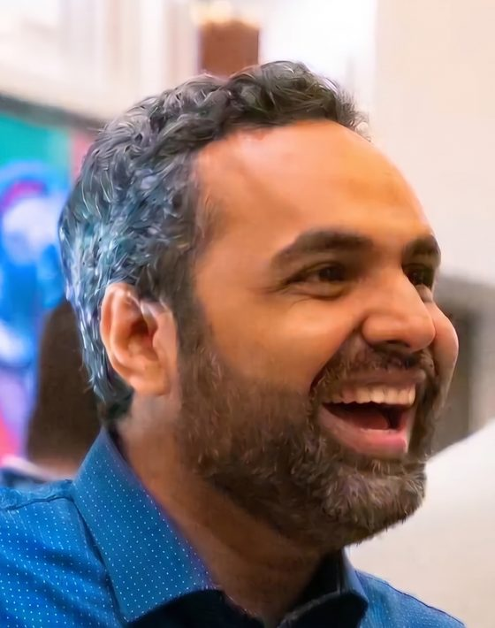

VP of Product Development and Engineering at Optym, Dallas, Texas
I am an engineer first. I lead product and engineering at Optym, a logistics tech company in Dallas. I own the engineering organization, the product roadmap, and the business unit P&L. I have managed teams since 2015, and I still write code.
I believe in product engineering: product and engineering as one discipline, not two functions handing work back and forth. I like building products that solve problems customers actually have.
The main product is a First Mile and Last Mile Optimization and execution platform for LTL carriers. I took it from discovery to MVP to scale: learned the operation in carrier terminals and on ride-alongs with drivers, developed the MVP as a monolith, led its rebuild in 2018 into a cloud native platform, and grew it to where it runs today at 11 LTL carriers in the US and Canada, used every day by drivers, planners, and dispatchers.
The product work starts with customers. During the build and rollout years I spent about half my time onsite at carrier terminals and riding with drivers. I sit with planners, dispatchers, drivers, and dock teams, listen to the problem in their words, and turn it into software.
In 2026 I built three more products on the platform: an MCP server for customer reporting (how we built it), an appointment scheduling agent, and shipment tracking. A fourth, dock automation, came out of discovery work on carrier docks.
Email · LinkedIn · GitHub · Writing · Ask my profile (a model that runs in your browser)
Own engineering, the product roadmap, and the business unit P&L for a 30 person organization. Built the MCP server, shipment tracking, and the appointment scheduling agent in 2026.
Ran product and engineering for the platform in production at 11 LTL carriers, on a monthly release cadence with 800 to 1,000 merged pull requests a year.
Moved the platform to monthly releases in 2022 and tightened release discipline. Hotfix branches fell every year after, from 45 in 2023 to 2 in 2026.
Managed the platform engineering team. Rode along with drivers to understand their pain points firsthand, and led the development of the mobile app drivers use. Started the platform changelog in April 2021.
Led the 2018 rebuild from an ASP.NET monolith to a cloud native platform: Node.js and TypeScript services, a React frontend, a .NET engine, Docker, then Kubernetes. Wrote 1,580 commits in 2019.
Developed the MVP of the planning platform as a monolith.
Led a team of 10 from 2015. Built enterprise apps and reporting tools for Microsoft, Amazon, and Starbucks, including architecture for a search driven BI portal and a Sales Insights application.
Built enterprise applications on the Microsoft stack: .NET, C#, SharePoint, SQL Server, and SSIS data back ends.
Developed iOS applications, including an app for Sydney Airport.
TypeScript, React, React Native, Node.js, Python, .NET, Azure (AKS, Azure SQL, Service Bus), Kubernetes, Helm, Terraform, Docker, Redis, Keycloak, Datadog, CockroachDB, MCP servers, and agentic AI applications, including voice agents and browser use agents. Nine Microsoft certifications.